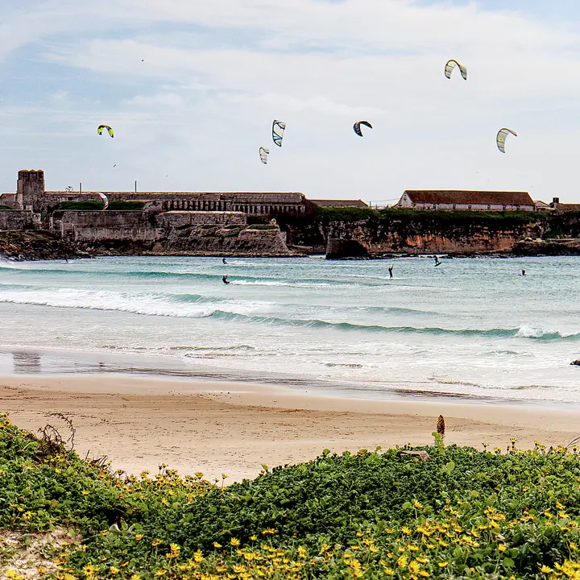
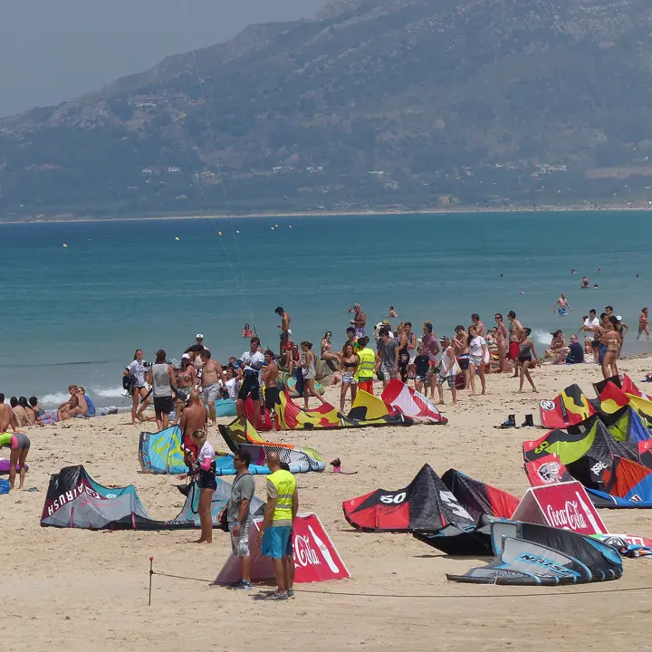
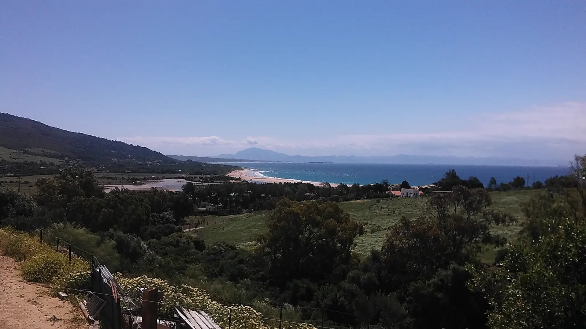
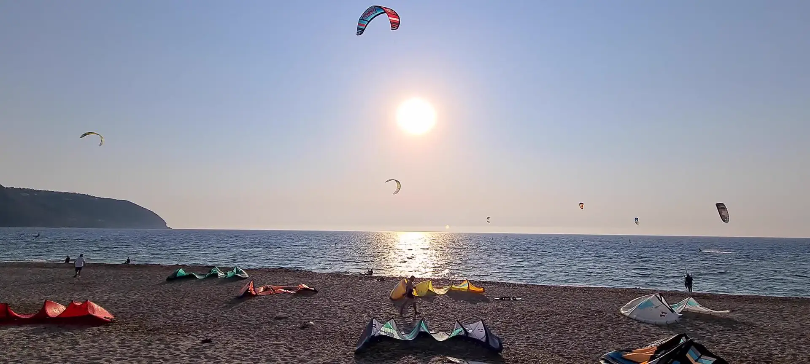

créditos
Las fotos y el vídeo son de colecciones abiertas. Muestran Tarifa y el kite en general, no a la escuela, que es ficticia.
| Imagen | Título y uso | Autor | Licencia | Fuente |
|---|---|---|---|---|
 | Tarifa playa los lances strapless kiter-4413 · cinta de la portada, clases privadas | Isiwal | CC BY-SA 4.0 | Wikimedia Commons |
 | Kitesurfer am Strand in Tarifa · cinta de la portada, cursos, spots | Grenzlandstern | CC BY-SA 4.0 | Wikimedia Commons |
 | Playa de los Lances, campeonato de Kitesurf, Tarifa, España, 2015 · cinta de la portada, bautismo | Benjamín Núñez González | CC BY-SA 4.0 | Wikimedia Commons |
 | Playa de los lances desde la Isla Kitesurf, Tarifa, España, 2015 · alquiler, spots | Benjamín Núñez González | CC BY-SA 4.0 | Wikimedia Commons |
 | Banderas, Kitesurf, Tarifa, España, 2015 (recortada, solo las banderas) · parte del viento | Benjamín Núñez González | CC BY-SA 4.0 | Wikimedia Commons |
 | Kitesurfing Sotavento (Fuerteventura, no Tarifa) · perfeccionamiento | Chrumps | CC BY-SA 4.0 | Wikimedia Commons |
 | Playa Valdevaqueros - 20170430 123826 · spots, sobre nosotros | El Pantera | CC BY-SA 4.0 | Wikimedia Commons |
 | YLH-TLE (Duna de Valdevaqueros) · portada | Basilievich | CC BY 2.0 | Wikimedia Commons |
 | Tarifa, Estrecho de Gibraltar. Strait of Gibraltar · portada, sobre nosotros | jose rambaud | CC BY 2.0 | Wikimedia Commons |
 | Kitesurfers, Lefkada Agios Ioannis beach, at the last windmill (Grecia, no Tarifa) · vídeo de la portada | Роман Рябенко | CC0 | Wikimedia Commons |


Cómo se han tratado
Las fotos se han recortado, reducido y convertido a WebP. En los campos de color se muestran en blanco y negro con un filtro. Las obras CC BY-SA se comparten con la misma licencia.
Tipografía
Bricolage Grotesque, de Mathieu Triay (The Bricolage Grotesque Project Authors), con licencia SIL Open Font License 1.1. Se sirve desde la propia web; el texto de la licencia está en assets/fonts/OFL.txt.
Dibujos
Las cometas y las rayas del parte del viento, el mapa de spots, el plano de contacto y el icono de la web están dibujados en código para esta web.